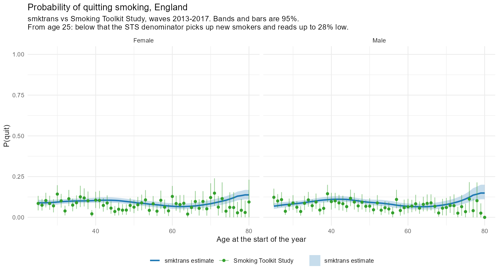
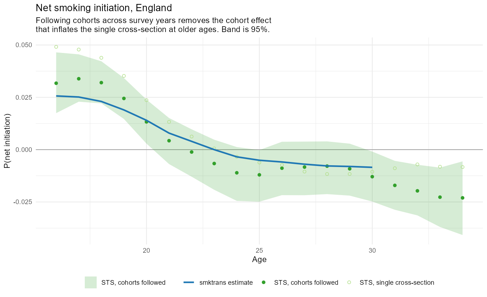

Validation of the England Transition Probabilities
July 2026
Source:vignettes/validation_england.Rmd
validation_england.RmdWhat this vignette is
A record of how the England transition probabilities were validated,
what the validation found, and how to reproduce it. The numbers below
are frozen from the July 2026 England run; the living version – the one
that re-runs against the current estimates and acts as a regression test
– is the report at
transition_probability_validation/90_validation_report.Rmd
in the project repository. This vignette does not require the survey
microdata to build, so the code shown is illustrative rather than
executed.
Two words are used precisely throughout.
Validation is comparing our estimates against data that had no part in producing them. The estimates are built from the Health Survey for England; the comparator is the Smoking Toolkit Study (STS), an independent monthly survey. There are two validations: quitting, and net initiation.
Verification is checking that the pipeline does to its inputs what we think it does. Relapse is verification only: it is built from one clinical study (Hawkins et al., 2010) and no independent measurement of relapse by time since quit exists to validate against. Verification can tell us the code is behaving; it cannot tell us the answer is right.
The comparison years, and why
All comparisons run over 2013–2017: years that sit entirely inside the model’s estimation window (initiation is estimated to 2017; later years in the published outputs are forecast), and before the STS’s 2020 switch to telephone interviewing, which left it barely sampling 16–17 year olds for two years. What is being tested is therefore the estimation, on the years it was actually estimated, against a survey operating normally. Forecast performance is a different question: the one look taken at it, against 2019–2023 waves, disagrees at the youngest ages in the direction that a trend fitted to pre-2019 data must disagree with a world where youth uptake turned upward after 2020. That is a statement about the forecast’s inputs, not about the estimation.
Quitting against the STS
The STS asks its smoking-status question directly: “stopped in the past year” is a response category, and the quit probability follows as the share of recent quitters among those smoking a year ago. Four details decide whether the comparison is fair, and each was worth measuring.
The definition. Recent quitters are identified from
the status question (smokstat), not from the timing of the
most recent quit attempt (q632b8). The attempt question is
asked of anyone who has made an attempt – including current smokers
whose attempt failed – and about 18% of the people the status question
identifies as recent quitters gave no usable answer to it. Building the
estimate on the attempt question dropped those people from the
denominator and biased the survey estimate downward by roughly 15%.
Age indexing. smktrans indexes
p_quit on age at the start of the year, so a person
observed at 40 who stopped during the year is evidence about
p_quit(39). Aligning the survey the same way moves its
estimate by around 45% – much the largest of the corrections.
Year exposure. A wave fielded in month of year asks about the previous twelve months, so of those months fall in . The model is averaged over the years the lookback window actually covers, weighted by exposure, rather than over the years the waves are stamped with. Worth about 0.9% here – small, but free, and it grows if the year range is ever widened.
Ages 25 and up. The survey denominator necessarily includes people who were not smoking a year ago and are smoking now – relapsers, and at young ages new smokers. A synthetic cohort run through the model’s own probabilities puts the resulting bias at 1–5% from age 26 upward (inside the survey’s confidence interval) but 23% below 25 and 28% at age 18. A comparison that is 28% out by construction is not a comparison, so the plot starts where the arithmetic holds.
Result. With those corrections in place, the model’s quit probabilities sit inside the STS 95% interval across ages 25–80 for both sexes.

Probability of quitting in England: the smktrans estimate (line, with its 95% band) against the corrected STS estimate (points, with 95% bars), ages 25 to 80, by sex. Snapshot from the July 2026 run; regenerated by 21_validate_quit.R.
Net initiation against the STS
Initiation itself cannot be validated: no general survey observes the moment of starting. What a repeated prevalence survey can measure is the net flow into current smoking, and the model produces the same quantity from a synthetic cohort:
One estimator subtlety carries the whole comparison. In a single cross-section, the people aged belong to an earlier birth cohort than the people aged , and with youth initiation having fallen for two decades the older cohort carries more smoking with it: the age gradient confounds the true flow with a cohort effect, precisely at the ages where the model is being judged. With several years of STS the same birth cohort can instead be followed from one survey year to the next:
which cancels the cohort effect by construction. On synthetic data with a known answer, the cross-sectional estimator overstates net initiation at ages 26–30 by up to 80%; the cohort-followed estimator tracks the truth and finds the correct sign change. The cohort-followed series is the primary comparison; the cross-section is plotted alongside it so the size of the cohort effect is visible rather than asserted.
Both sides of the comparison are free to go negative: past the age where a cohort’s smoking prevalence peaks, quitting runs ahead of initiation and relapse combined, and the location of that sign change – about age 23 on both the model and the survey – is itself part of what is compared.
Result, England, ages 16–30, estimation years:
| Measure | Value |
|---|---|
| Ages compared | 15 |
| Model inside the STS 95% interval | 100% |
| Median difference (model minus STS) | +0.00137 |
| Correlation over age | 0.982 |

Net smoking initiation in England over the estimation years. Snapshot from the July 2026 run; regenerated by 22_validate_net_initiation.R.
There are four things on this figure, and they are worth taking one at a time.
The solid line is the smktrans estimate: the synthetic cohort of the previous section walked through the estimated initiation, quitting and relapse probabilities. It stops at age 30 because the initiation pipeline runs to age 30; the survey carries on without it, which is a limit of the model’s range, not a disagreement.
The filled points, and the shaded band around them, are the primary survey estimate: the same birth cohort followed from one survey year to the next, with a bootstrapped 95% interval. This is the series the model is judged against, and the coverage figures in the table below refer to it.
The open points are the single-cross-section estimate – prevalence differenced over age within one pooled sample. They are on the figure for one reason: the vertical gap between the open and filled points is the cohort effect, measured rather than asserted. The two series agree at young ages and pull apart with age, exactly as they should: the older the age, the earlier the birth cohort a cross-section substitutes in, and the more smoking that cohort carries. A reader can see the size of the bias the cohort-followed estimator removes.
The horizontal line at zero matters more than gridlines usually do. Above it, more people are flowing into smoking than out; below it, the cohort’s smoking prevalence is falling. Both the model and the survey cross it at about age 23, and that shared crossing – the age at which smoking prevalence peaks – is as informative as any coverage percentage, because nothing in the estimation was tuned to produce it.
The median difference is smaller than the smoothing bias measured in the cohort-followed estimator itself on synthetic data (about 0.002). At that point the survey-side instrument, not the model, is the binding constraint, and chasing the difference further would mean fitting the instrument’s error.
Relapse against its own evidence
With no external data, the check is an invariant: the pipeline’s relapse surface is a demographically weighted average of the Hawkins table, and a weighted average cannot sit outside the range of what it averages. For every time-since-quit value, the published probability must lie inside the envelope spanned by the 160 Hawkins covariate combinations.
On the July 2026 England run the historical surface satisfied this exactly – zero breaches across 226,500 cells – alongside shape checks against the paper (the sub-year adjustment at quit reproduces the Jackson et al. continuous-abstinence curve at the reference cell to four decimal places).
The check has earned its keep twice. It caught the relapse forecast fitting a trend to the demographic re-weighting noise in the surface – Hawkins itself has no time dimension – and compounding it into relapse probabilities by 2040 that no combination of the evidence produces; the forecast is stationary as a result. And its version guard, which exploits the fact that the rebuilt Hawkins table pools its sparse tail years and the old one did not, catches a session judging new outputs against an old envelope (or the reverse) before any spurious breach is reported.
Where this leaves things
The estimation stands up: quitting inside the survey interval across 25–80 for both sexes, net initiation inside it at every compared age with the sign change agreeing, and the relapse surface exactly consistent with its inputs. The two places any remaining concern should live are the forecast years, which cannot contain the post-2020 turn in youth uptake because the survey feeding the trend ends in 2018 (integrating HSE 2019 is the next data step), and the level of relapse, which rests on a single study; the STS decline in prevalence at ages 31–34 would offer relapse an external check if the initiation pipeline were extended past age 30.
Reproducing this
The validation lives in
transition_probability_validation/ in the project
repository: numbered scripts for each comparison, a shared utilities
file holding the STS estimators and their tests, and the report that
knits them together.
# from the project root, after an England estimation run
source("transition_probability_validation/21_validate_quit.R")
source("transition_probability_validation/22_validate_net_initiation.R")
source("transition_probability_validation/23_verify_relapse_against_hawkins.R")
rmarkdown::render("transition_probability_validation/90_validation_report.Rmd")The report is the regression test: it is re-run after any change to the estimation, and a change that moves the transition probabilities shows up in its scoreboards before it shows up anywhere downstream.
The two figures above are snapshots, not live output: the vignette
builds without the survey data, so it shows the saved plots rather than
regenerating them. After a re-run that changes the estimates, copy the
fresh versions from
transition_probability_validation/outputs/ into
vignettes/ and update the frozen numbers in the table above
in the same commit, so the figures, the numbers and the date always
describe the same run.